El Barça confía en repetir el guión que utilizó en Gandia para seguir adelante en la Copa del Rey.
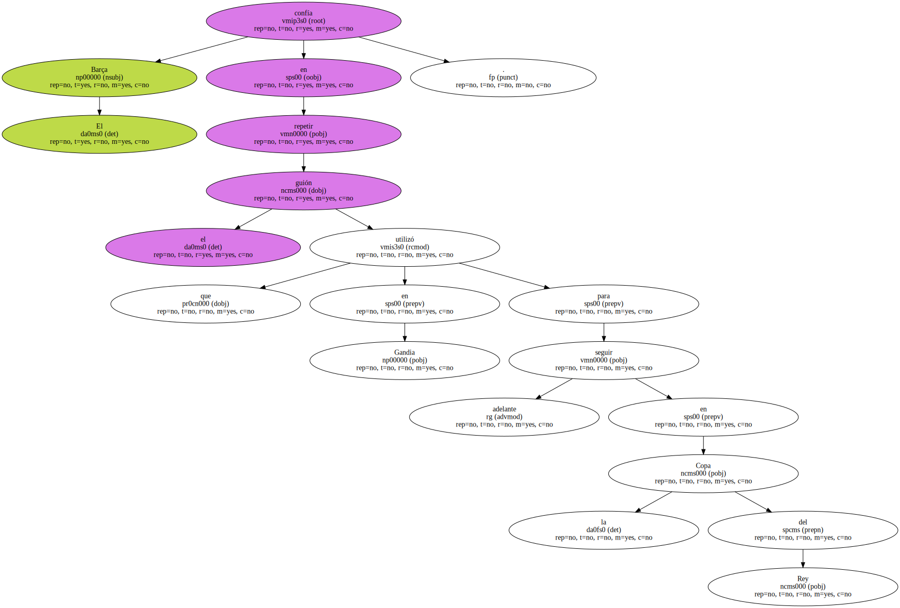La visita a Ceuta presenta idénticos condicionantes que la ronda anterior.
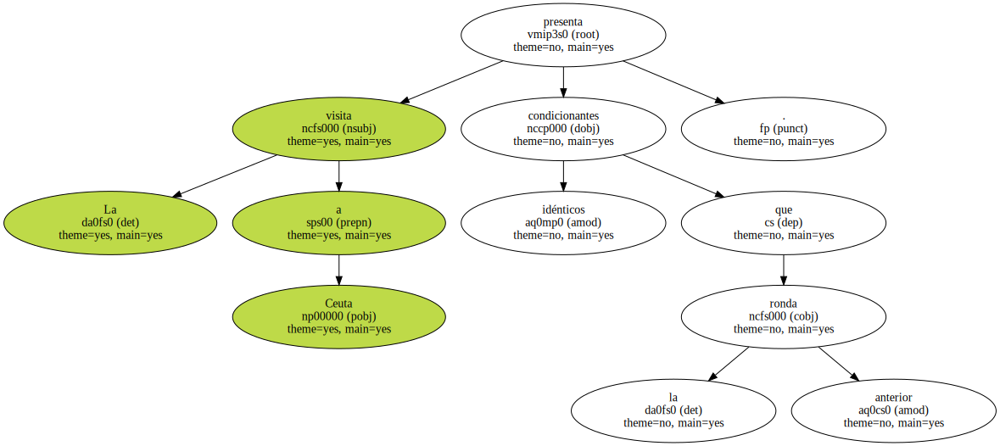Un Segunda B , un campo en mal estado , la presión de jugárselo todo a partido único y la motivación de unos y otros.
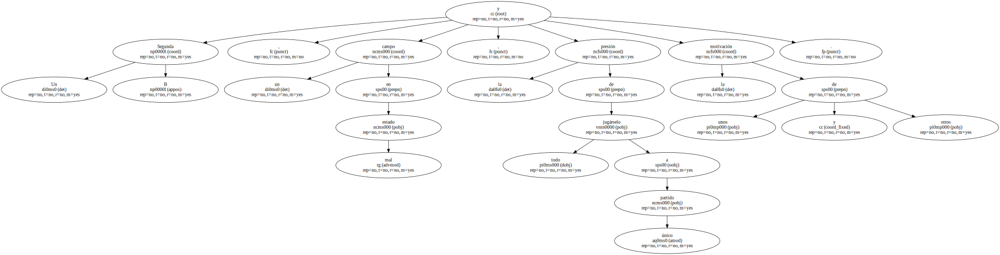En una cita llena de trampas , Serra Ferrer apeló a la necesidad de ser " humildes " para evitar un descalabro como el que sufrió el Madrid en Toledo.
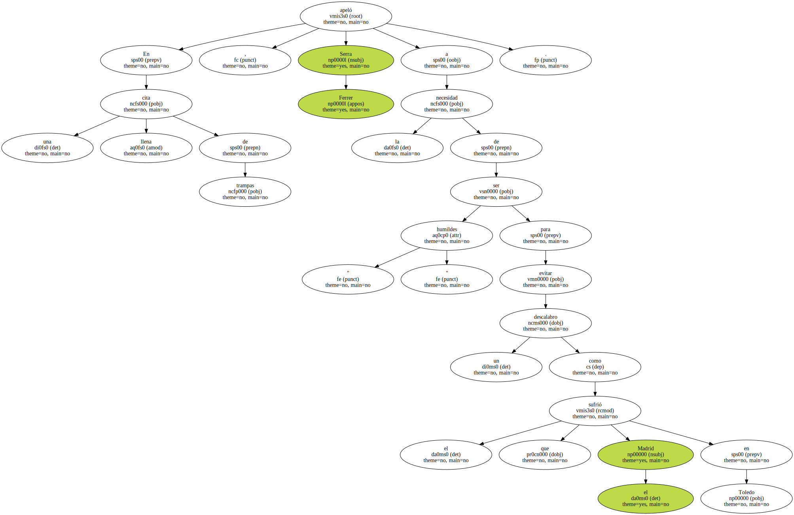Entre el grupo de jugadores que deberán resolver este ingrato compromiso ( los octavos de final ya se disputarán a doble partido ) no figuran ni Rivaldo ni Overmars ni De la Peña.
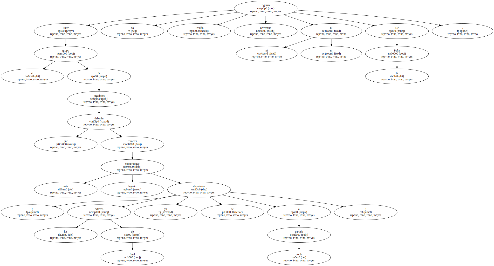Los dos primeros se han quedado en casa por decisión del entrenador.
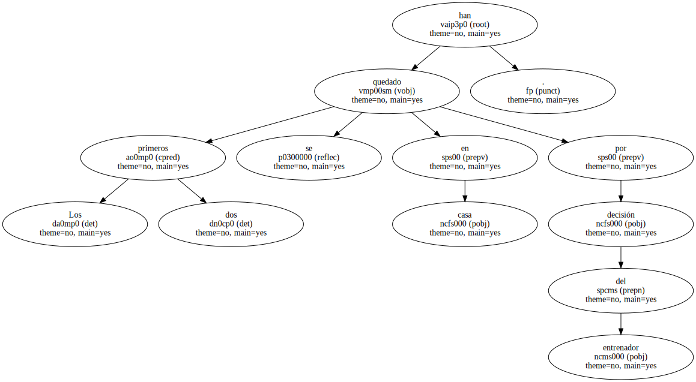" Les he dado descanso porque hay que dosificar a la plantilla ya que nos espera un mes de Febrero muy apretado " , explicó.

Al margen de que , como todos , han disfrutado de unos días de descanso , curiosamente Rivaldo y Overmars tampoco estuvieron en Gandía con lo que esa elección resulta más que cuestionable.
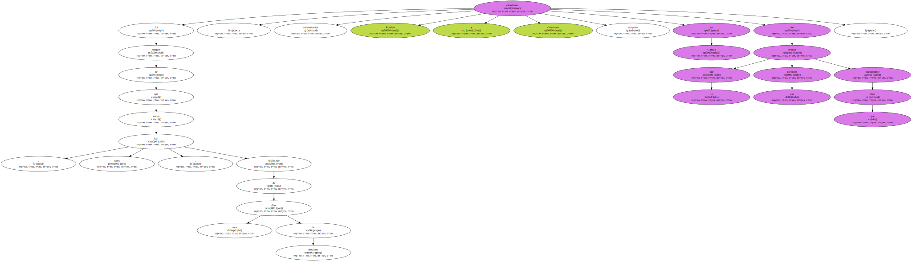De la Peña , en cambio , es baja por una lesión que sufrió en el entrenamiento de ayer.
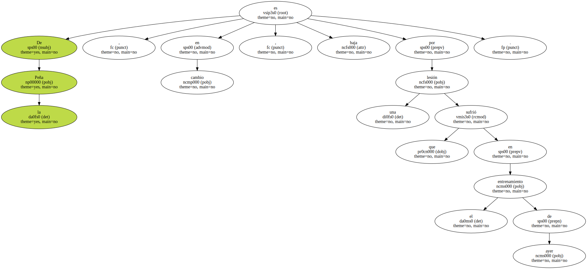La gran novedad en la lista , además de la presencia de Dani , es el regreso de Richard Dutruel.
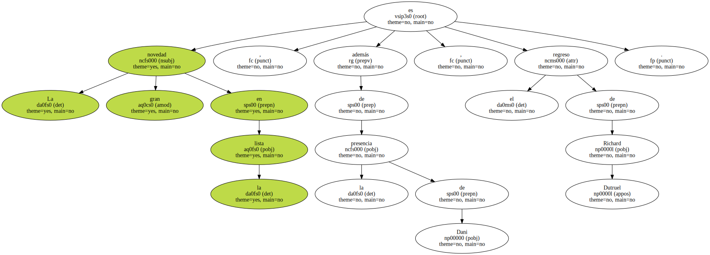La duda es si el portero francés recuperará hoy mismo la titularidad o si el técnico optará , como parece probable , por mantener a Reina.
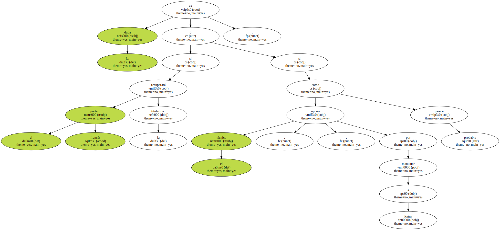En su afán por esconder sus planes , ni siquiera ha comunicado la decisión a los jugadores.
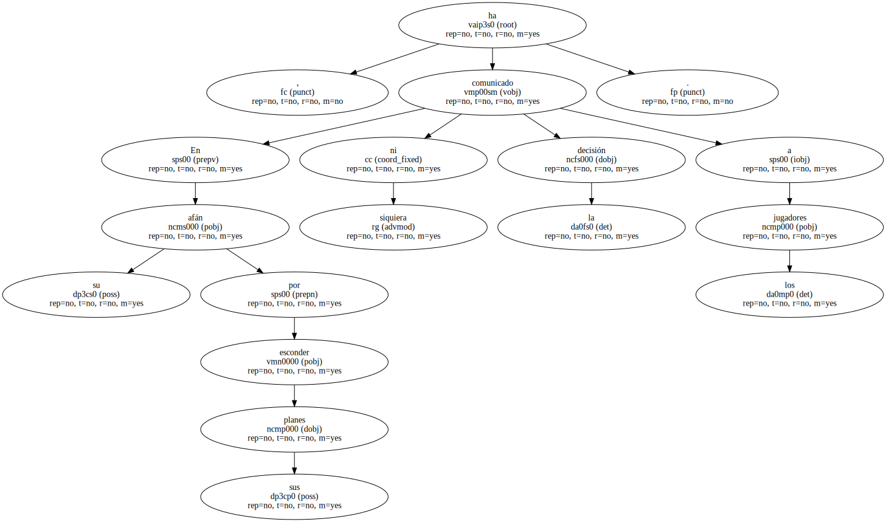Salvo la concesión de Rivaldo y Overmars , Serra Ferrer no quiere correr riesgos y ha reclamado a los jugadores la máxima concentración.
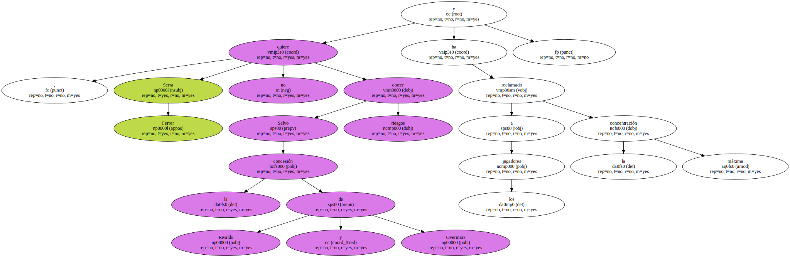" Hay que tomar precauciones " , dijo.
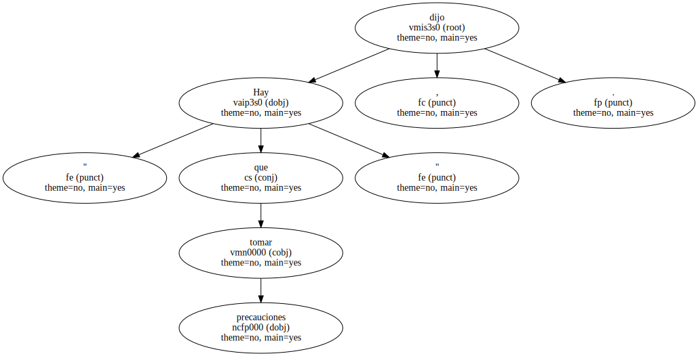Esta obsesión por eliminar cualquier signo de relajación o de exceso de confianza le ha llevado incluso a mantener charlas individuales con varios jugadores.
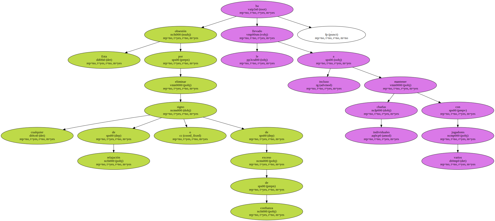" No podemos pensar que antes de jugar esto ya está ganado " , es el mensaje que ha repetido con insistencia.
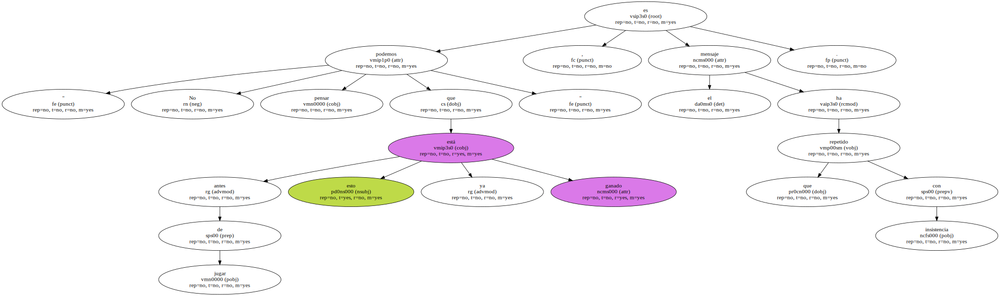A pesar de la diferencia de categoría , el técnico se refirió al Ceuta con admiración.
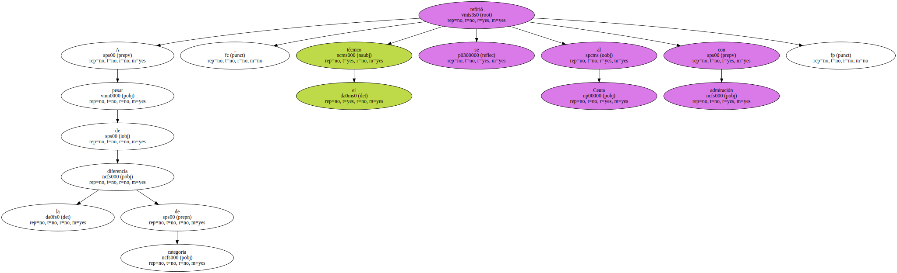" Los informes son muy buenos . Conozco al entrenador , Alvaro , y le gusta el buen fútbol . El nivel del equipo es muy alto , juegan muy ordenados y son muy competitivos " , aseguró , advirtiendo que es un rival superior al Gandia.
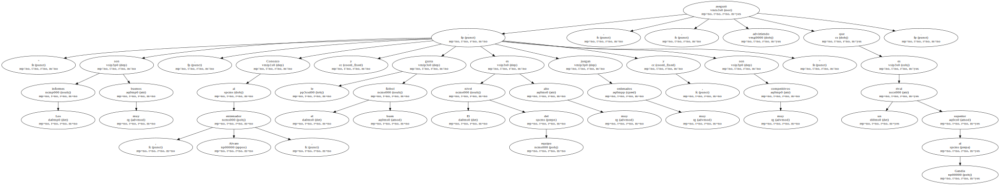